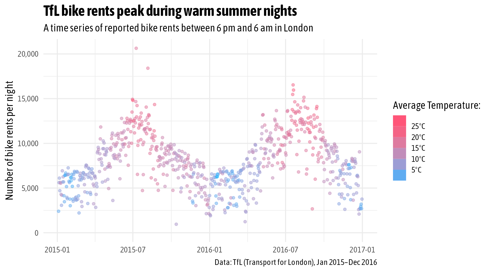
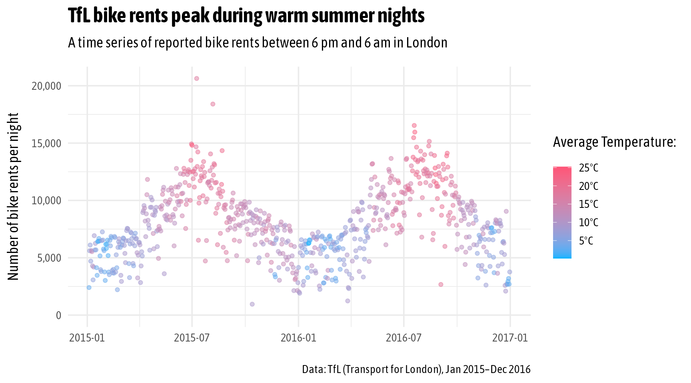

Chapter 5 Tips to Improve Your ggplot Design
In the following I want to share some tips how you quickly customize the appearance of your graphics with a few additional lines of code. First, let’s create a plot to work with: we will display the counts of reported bike rents during the night only as a time series. To focus on the tips, we assign the ggplot output to g and extend this object in the following.
library(ggplot2)
library(dplyr)
bikes_nightly <- filter(bikes, day_night == "night")
g <-
ggplot(bikes_nightly, aes(x = date, y = count)) +
geom_point(aes(color = temp), alpha = .5) +
## style y axis, labels and colors
scale_y_continuous(limits = c(0, NA), labels = scales::label_comma()) +
scale_color_gradient(
low = "#00B3FF", high = "#FF5477",
labels = scales::label_number(suffix = "°C")
) +
labs(
x = NULL, y = "Number of bike rents per night", color = "Average Temperature:",
title = "TfL bike rents peak during warm summer nights",
subtitle = "A time series of reported bike rents between 6 pm and 6 am in London",
caption = "Data: TfL (Transport for London), Jan 2015–Dec 2016"
)
g
FIGURE 5.1: A time series of reported bike rents during the night (6 pm to 6 am) with points being encoded by the average temperature using the default ggplot2 theme.
5.1 Use a Different Theme
The simplest step to give your plot a different appearance is using one of the complete themes provided by ggplot2. We already have seen theme_light() in the previous section. A full list of themes:
theme_gray(), the default theme with a grey panel, white grid lines, and grey boxes for facetstheme_minimal()without a panel border and facet boxes ≈*theme_bw()with a white panel, grey grid lines, a black panel border, and grey boxes for facetstheme_linedraw(), similar totheme_bw()but featuring black axis text and facet boxestheme_light(), similar totheme_bw()but with a grey panel border and all-grey facet boxestheme_minimal()without a panel border and facet boxestheme_classic()with axis lines but no grid lines and white facet boxes with a black outlinetheme_dark()with a dark-grey panel and even darker facet boxestheme_void(), a completely empty theme
The completely empty theme theme_void() is often helpful when working with maps. Also, you can use it to build your theme element by element like drawing on a blank canvas.
Let’s use the popular theme_minimal() for now:
g + theme_minimal()
FIGURE 5.2: The same plot as before using the minimal theme.
5.2 Use a Custom Font
There are multiple extension packages that aim to provide access to font files, extrafont, sysfont, showtext, and systemfonts to name a few. To my knowledge, the systemfonts package provides the best solution to work with typefaces and resolve font specifications. After loading the package, all locally installed font files are available in your current R session.
The default font family of ggplot themes is the default sans serif font and thus it is specific to the system you and potential collaborators are working on. You can overwrite the default by passing a font family as argument to base_family inside the theme_*() call.
g + theme_minimal(base_family = "Asap Condensed")
FIGURE 5.3: All text labels now use a custom font by changing the base_family of the theme.
If you are searching for a specific font, this is my script to return family names that can be used as inputs for text elements in ggplot2:
systemfonts::system_fonts() %>%
## filter for a pattern
dplyr::filter(stringr::str_detect(name, "Asap")) %>%
## only keep family column
dplyr::pull(family) %>%
## only keep distinct families and sort them by name
unique() %>%
sort()## [1] "Asap" "Asap Condensed"
## [3] "Asap Expanded" "Asap SemiCondensed"
## [5] "Asap SemiExpanded"5.3 Increase the Font Sizes
The base size in any ggplot theme is set to 11. This number determines the individual text sizes and line widths of your theme elements. Depending on the width and height specified when saving your plot, you may want to adjust the overall size by changing the base_size in the theme_*() call.
(g <- g + theme_minimal(base_family = "Asap Condensed", base_size = 14))
FIGURE 5.4: If the text elements are too small for the desired out width and height, you can adjust them by overwriting the default base_size.
5.4 Create Text Hierarchy
By default, the title is always set in regular weight. In many cases I find myself using a font that is bold and larger than by default. You can update details of the theme by directly addressing the respective theme element, here plot.title. As the title is a text element, we pass the new settings inside the element_text() function. The face argument controls the font style and can take "regular", "bold", "italic", and "bold.italic" as inputs. The size can either be set in absolute numbers or relative to the base_size via the rel() function.
(g <- g + theme(plot.title = element_text(face = "bold", size = rel(1.4))))
FIGURE 5.5: One can style single theme elements with the theme() function. Here, we create a more pronounced tet hierarchy by setting the title in a bigger, bold typeface.
5.5 Modify the Legend
[WIP]
g + guides(color = guide_colorsteps())
g + guides(color = guide_colorsteps(
barheight = unit(15, "lines")
))g + guides(color = guide_colorsteps(
barwidth = unit(25, "lines"), title.position = "top"
)) +
theme(legend.position = "top", legend.justification = "left")5.6 Align Titles and Captions
By default, the titles and captions are left-aligned with the horizontal justification being set to hjust = 0. However, the horizontal justification does only impact the alignment of the title relative to the panel. If you want to place these text elements relative to the outer border of your graphic. you can set plot.title.position plot.caption.position to "plot", respectively
g + theme(plot.title.position = "plot",
plot.caption.position = "plot")
FIGURE 5.6: The title and sutitle can be aligned with the plot border by setting plot.title.position to "plot". Similarly, the position of the caption can be changed by using plot.caption.position.
The importance of aligning the title either with the panel border (the default behavior) or with the plot border becomes especially important if you have long labels on the left of the plot. This is often the case when displaying categories along the y axis with a left-aligned title (Fig. 5.7. The same applies for right-aligned text in case of increased margins on the right of the panel, for example when using facets or adding legends.

FIGURE 5.7: Plots with long labels on the y axis with the title being either aligned with the panel border (default behavior, left) or with the plot border (right).
5.7 Add Some White Space
[WIP]
g + theme(plot.margin = margin(rep(20, 4)))g + theme(
plot.title = element_text(margin = margin(b = 10)),
plot.subtitle = element_text(margin = margin(b = 15)),
plot.caption = element_text(margin = margin(t = 20)),
axis.title.y = element_text(margin = margin(r = 10)),
legend.title = element_text(margin = margin(b = 10)),
)